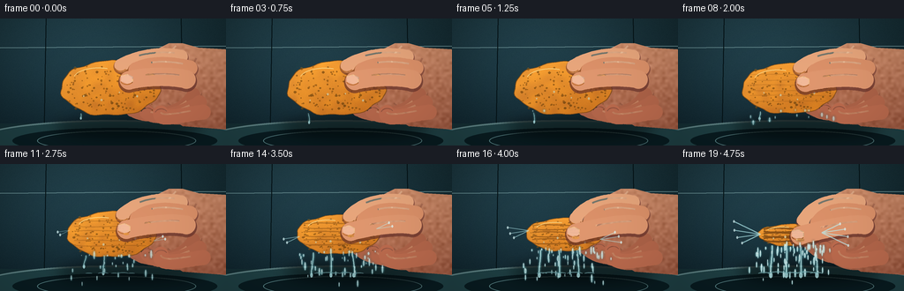
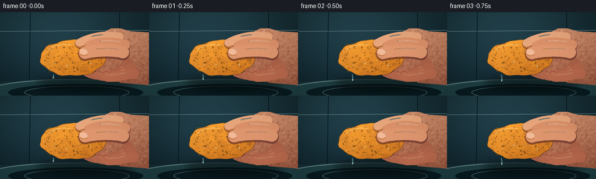

CODING AGENTS AS PIXEL WORLD MODELS
traex/GPT-5.6-Sol · phygen_011
点击播放 · 原生 RGB 像素
逐轮保存的候选
回放视频、检查图与代码变化。
每份候选均可单独播放。实际图片检查记录在下方工具轨迹中。
候选 01播放与检查图
点击播放 · 原生 RGB 像素


展开代码变化
--- 上一保存版本
+++ 本次保存版本
@@ -0,0 +1,346 @@
+from pathlib import Path
+import math
+import numpy as np
+from PIL import Image, ImageDraw, ImageFilter
+import artifact_io
+
+# Deterministic, hand-drawn high resolution render. The scene is deliberately
+# kept under a locked camera so that the changing deformation reads as a timelapse.
+W, H, S = 256, 144, 4
+RW, RH = W*S, H*S
+rng = np.random.default_rng(11872)
+
+
+def sc(v): return int(round(v*S))
+def pts(seq): return [(sc(x), sc(y)) for x,y in seq]
+
+def bezier(p0,p1,p2,p3,n=24):
+ out=[]
+ for u in np.linspace(0,1,n):
+ v=1-u
+ out.append((v**3*p0[0]+3*v*v*u*p1[0]+3*v*u*u*p2[0]+u**3*p3[0],
+ v**3*p0[1]+3*v*v*u*p1[1]+3*v*u*u*p2[1]+u**3*p3[1]))
+ return out
+
+def smooth_poly(layer, coordinates, fill, outline=None, width=1):
+ d=ImageDraw.Draw(layer)
+ d.polygon(pts(coordinates), fill=fill)
+ if outline: d.line(pts(coordinates+[coordinates[0]]), fill=outline, width=sc(width), joint='curve')
+
+def rgba_layer(): return Image.new('RGBA',(RW,RH),(0,0,0,0))
+
+def line_curve(layer, coordinates, fill, width, joint='curve'):
+ d=ImageDraw.Draw(layer)
+ d.line(pts(coordinates), fill=fill, width=sc(width), joint=joint)
+ r=width/2
+ for x,y in (coordinates[0],coordinates[-1]):
+ d.ellipse((sc(x-r),sc(y-r),sc(x+r),sc(y+r)),fill=fill)
+
+def mask_texture(mask, top=(232,164,123), bottom=(153,84,60), seed=0, light_x=0.25):
+ yy,xx=np.mgrid[0:RH,0:RW]
+ yn=yy/(RH-1); xn=xx/(RW-1)
+ mix=np.clip(.18+.77*yn + .10*(xn-light_x),0,1)[...,None]
+ a=np.array(top,float); b=np.array(bottom,float)
+ arr=a*(1-mix)+b*mix
+ rr=np.random.default_rng(seed)
+ coarse=rr.normal(0,1,(RH//12+2,RW//12+2))
+ noise=np.array(Image.fromarray(np.uint8(np.clip(128+35*coarse,0,255))).resize((RW,RH),Image.Resampling.BICUBIC),float)-128
+ arr += noise[...,None]*.18
+ arr=np.clip(arr,0,255).astype(np.uint8)
+ out=Image.fromarray(arr,'RGB').convert('RGBA')
+ out.putalpha(mask)
+ return out
+
+# Fixed pores expressed in local sponge coordinates, so they compress with it.
+pore_data=[]
+for _ in range(185):
+ x=rng.uniform(-.48,.48); y=rng.uniform(-.45,.45)
+ r=rng.choice([.55,.7,.9,1.15,1.5],p=[.20,.28,.27,.18,.07])
+ shade=int(rng.integers(0,35)); pore_data.append((x,y,r,shade,rng.uniform(0,math.tau)))
+
+# Water parcels have deterministic release thresholds and velocities.
+drop_data=[]
+for j in range(80):
+ onset=rng.uniform(.05,.96)
+ anchor=rng.uniform(-.49,.49)
+ vx=rng.normal(0,10)*(0.3+onset)
+ vy=rng.uniform(20,52)
+ rad=rng.uniform(.45,1.45)
+ drop_data.append((onset,anchor,vx,vy,rad,rng.uniform(0,1)))
+
+
+def base_background(frame_i):
+ # Dark blue-green utility sink, lit softly from upper left.
+ yy,xx=np.mgrid[0:RH,0:RW]
+ xn=xx/RW; yn=yy/RH
+ radial=np.exp(-(((xn-.37)/.55)**2+((yn-.25)/.72)**2))
+ rgb=np.empty((RH,RW,3),float)
+ rgb[...,0]=17+18*radial-7*yn
+ rgb[...,1]=37+29*radial-10*yn
+ rgb[...,2]=42+34*radial-8*yn
+ # fixed fine grain creates a photographic rather than flat vector background
+ grain=np.random.default_rng(991).normal(0,2.3,(RH,RW,1))
+ rgb=np.clip(rgb+grain,0,255).astype(np.uint8)
+ im=Image.fromarray(rgb,'RGB').convert('RGBA')
+ d=ImageDraw.Draw(im,'RGBA')
+ # Out-of-focus tile seams and sink ledge.
+ d.line([(0,sc(33)),(RW,sc(31))],fill=(104,141,145,28),width=sc(1))
+ d.line([(sc(52),0),(sc(50),sc(118))],fill=(5,19,23,55),width=sc(1))
+ d.line([(sc(205),0),(sc(207),sc(119))],fill=(5,19,23,50),width=sc(1))
+ d.rectangle((0,sc(119),RW,RH),fill=(21,46,51,255))
+ d.ellipse((sc(-30),sc(115),sc(286),sc(164)),fill=(31,64,68,255),outline=(91,126,128,80),width=sc(2))
+ d.ellipse((sc(14),sc(124),sc(246),sc(153)),fill=(9,28,33,255))
+ d.ellipse((sc(42),sc(127),sc(222),sc(150)),outline=(89,131,134,70),width=sc(1))
+ return im
+
+
+def add_shadow(im,p):
+ lay=rgba_layer(); d=ImageDraw.Draw(lay)
+ d.ellipse((sc(61+7*p),sc(111-3*p),sc(231),sc(137)),fill=(0,0,0,115))
+ lay=lay.filter(ImageFilter.GaussianBlur(sc(7)))
+ im.alpha_composite(lay)
+
+
+def draw_palm(im,p):
+ # Wrist and palm form the unmistakable single hand behind the sponge.
+ mask=Image.new('L',(RW,RH),0); d=ImageDraw.Draw(mask)
+ silhouette=[(259,35),(225,33),(207,28),(191,28),(179,34),(172,46),
+ (174,60),(167,72),(174,91),(186,109),(207,122),(259,126)]
+ d.polygon(pts(silhouette),fill=255)
+ # heel of palm
+ d.ellipse((sc(159),sc(43),sc(242),sc(120)),fill=255)
+ tex=mask_texture(mask,(239,177,135),(151,82,59),371)
+ im.alpha_composite(tex)
+ lay=rgba_layer(); dl=ImageDraw.Draw(lay,'RGBA')
+ dl.line(pts([(199,31),(188,43),(187,63)]),fill=(255,223,188,90),width=sc(2))
+ dl.line(pts([(222,45),(211,70),(218,95)]),fill=(99,44,39,65),width=sc(2))
+ dl.line(pts([(230,111),(205,108),(190,96)]),fill=(91,44,39,58),width=sc(2))
+ # subtle tendons and palm creases
+ dl.arc((sc(175),sc(52),sc(230),sc(103)),15,116,fill=(103,48,42,70),width=sc(1))
+ dl.arc((sc(181),sc(67),sc(230),sc(112)),32,143,fill=(255,211,174,42),width=sc(1))
+ im.alpha_composite(lay)
+
+
+def draw_rear_fingers(im,p):
+ # Three fingers curve under the sponge. Their upward travel supplies the
+ # opposing force to the thumb on top.
+ lay=rgba_layer()
+ ends=[(150,104-13*p),(166,106-14*p),(182,107-12*p)]
+ starts=[(219,86),(226,95),(230,106)]
+ widths=[15,16,17]
+ for k,(st,en,wid) in enumerate(zip(starts,ends,widths)):
+ curve=bezier(st,(211-k*2,105+k*2),(174+k*2,117),en,26)
+ line_curve(lay,curve,(174+7*k,99+4*k,72+3*k,255),wid)
+ hi=[(x,y-wid*.20) for x,y in curve[5:-3]]
+ ImageDraw.Draw(lay).line(pts(hi),fill=(244,180,137,90),width=sc(2))
+ # short crease at each bent knuckle
+ ImageDraw.Draw(lay).arc((sc(en[0]-7),sc(en[1]-5),sc(en[0]+8),sc(en[1]+7)),200,330,fill=(103,49,43,95),width=sc(1))
+ im.alpha_composite(lay)
+
+
+def sponge_geometry(p,frame_i):
+ cx=125+3*p
+ # volume bulges briefly sideways, then compacts hard late in the timelapse
+ w=112-24*p-14*p*p
+ h=62-19*p-18*p*p
+ cy=79+1.5*p
+ n=70
+ contour=[]
+ # Slight organic edge, with contact dents growing beneath thumb/fingertips.
+ for q in range(n):
+ a=2*math.pi*q/n
+ x=cx+(w/2)*math.cos(a)
+ y=cy+(h/2)*math.sin(a)
+ jitter=(1.05*math.sin(7*a+0.3)+.65*math.sin(13*a+1.5))*(.45+.55*(1-p))
+ x += jitter*math.cos(a); y += jitter*math.sin(a)
+ # left edge puckers under high pressure
+ if p>.35: x += 2.1*p*math.sin(3*a)*max(0,-math.cos(a))
+ contour.append((x,y))
+ return cx,cy,w,h,contour
+
+
+def draw_sponge(im,p,frame_i):
+ cx,cy,w,h,contour=sponge_geometry(p,frame_i)
+ mask=Image.new('L',(RW,RH),0); ImageDraw.Draw(mask).polygon(pts(contour),fill=255)
+ yy,xx=np.mgrid[0:RH,0:RW]
+ xn=(xx/S-cx)/(w/2); yn=(yy/S-cy)/(h/2)
+ # Golden wet-cellulose texture, bright top-left and rusty in compressed folds.
+ light=np.clip(.74-.27*yn-.14*xn,0,1)
+ rr=np.random.default_rng(700+frame_i)
+ fine=rr.normal(0,4.0,(RH,RW))
+ coarse=rr.normal(0,1,(20,32))
+ coarse=np.asarray(Image.fromarray(coarse.astype(np.float32),mode='F').resize((RW,RH),Image.Resampling.BICUBIC))
+ arr=np.zeros((RH,RW,4),np.uint8)
+ arr[...,0]=np.clip(180+63*light+fine+5*coarse,0,255)
+ arr[...,1]=np.clip(91+65*light+fine*.65+4*coarse,0,255)
+ arr[...,2]=np.clip(18+33*light+fine*.25,0,255)
+ arr[...,3]=np.asarray(mask)
+ sponge=Image.fromarray(arr,'RGBA')
+ im.alpha_composite(sponge)
+ details=rgba_layer(); d=ImageDraw.Draw(details,'RGBA')
+ # Dark wet rim and pores.
+ d.line(pts(contour+[contour[0]]),fill=(109,63,18,170),width=sc(1))
+ for x,y,r,shade,ang in pore_data:
+ px=cx+x*w*.93; py=cy+y*h*.91
+ # Pores flatten with the sponge; highlights make them read as cavities.
+ rx=r*(1+.2*p); ry=max(.28,r*(h/62))
+ col=(int(91+shade),int(55+shade//2),12,int(115+r*35))
+ d.ellipse((sc(px-rx),sc(py-ry),sc(px+rx),sc(py+ry)),fill=col)
+ if r>1:
+ d.arc((sc(px-rx),sc(py-ry),sc(px+rx),sc(py+ry)),190,335,fill=(255,207,75,120),width=max(1,sc(.35)))
+ # Compression wrinkles become rapidly stronger.
+ if p>.18:
+ alpha=int(40+135*p*p)
+ for k in range(6):
+ y=cy-h*.28+k*h*.105
+ amp=(1.1+2.5*p)*(1 if k%2 else -1)
+ curve=[(cx-w*.42,y),(cx-w*.16,y+amp),(cx+w*.12,y-amp*.7),(cx+w*.39,y+amp*.2)]
+ d.line(pts(bezier(curve[0],curve[1],curve[2],curve[3],18)),fill=(99,54,13,alpha),width=sc(.7+1.2*p))
+ # Wet specular sheen and beads on face.
+ d.arc((sc(cx-w*.38),sc(cy-h*.38),sc(cx+w*.14),sc(cy+h*.05)),196,290,fill=(255,244,173,140),width=sc(1))
+ for k in range(4):
+ bx=cx-w*.27+k*w*.18
+ by=cy+h*(.14+.08*math.sin(k*2.1+frame_i*.5))
+ r=.7+(.35 if k%2 else 0)
+ d.ellipse((sc(bx-r),sc(by-r),sc(bx+r),sc(by+r*1.5)),fill=(194,240,236,120))
+ im.alpha_composite(details)
+ return cx,cy,w,h
+
+
+def draw_top_fingers_and_thumb(im,p,cx,cy,w,h):
+ # Index and middle fingers fold down from the palm; distal pads visibly sink
+ # into the top edge as grip pressure accelerates.
+ lay=rgba_layer()
+ configs=[
+ ((205,43),(181,38),(154,43),(137+5*p,53+11*p),15,(232,166,124,255)),
+ ((215,56),(189,50),(169,51),(154+4*p,58+9*p),17,(220,145,105,255)),
+ ]
+ for k,(a,b,c,e,wid,col) in enumerate(configs):
+ curve=bezier(a,b,c,e,30)
+ # dark under-edge then flesh body for modeled volume
+ line_curve(lay,[(x,y+1.5) for x,y in curve],(111,55,47,150),wid+2)
+ line_curve(lay,curve,col,wid)
+ ImageDraw.Draw(lay).line(pts([(x,y-wid*.18) for x,y in curve[3:20]]),fill=(255,218,177,100),width=sc(2))
+ # distal crease
+ ImageDraw.Draw(lay).arc((sc(e[0]-8),sc(e[1]-5),sc(e[0]+7),sc(e[1]+7)),35,155,fill=(111,52,45,105),width=sc(1))
+ im.alpha_composite(lay)
+
+ # Broad thumb crosses the front and drives inward/down. It is the strongest
+ # visual force cue and its endpoint travels farthest during late frames.
+ thumb=rgba_layer()
+ start=(211,69)
+ end=(146-8*p,70+11*p)
+ curve=bezier(start,(195,65+2*p),(168,65+8*p),end,34)
+ line_curve(thumb,[(x,y+2) for x,y in curve],(101,48,41,175),24)
+ line_curve(thumb,curve,(224,151,111,255),21)
+ dd=ImageDraw.Draw(thumb,'RGBA')
+ dd.line(pts([(x,y-3.2) for x,y in curve[5:25]]),fill=(255,213,170,95),width=sc(2))
+ # Thumbnail follows the distal thumb, with a natural translucent edge.
+ ex,ey=end
+ nail=[(ex-9,ey-5),(ex-2,ey-7),(ex+4,ey-4),(ex+4,ey+2),(ex-2,ey+4),(ex-9,ey+1)]
+ dd.polygon(pts(nail),fill=(244,190,163,235))
+ dd.line(pts(nail[:4]),fill=(255,229,208,145),width=sc(1))
+ dd.arc((sc(ex-10),sc(ey-5),sc(ex+5),sc(ey+5)),25,160,fill=(132,67,58,100),width=sc(1))
+ # pressure blanch at contact pad
+ if p>.35:
+ rr=2+3*p
+ dd.ellipse((sc(ex-rr),sc(ey+5-rr*.4),sc(ex+rr),sc(ey+5+rr*.4)),fill=(250,191,144,int(45+70*p)))
+ im.alpha_composite(thumb)
+
+
+def draw_water(im,p,t,cx,cy,w,h):
+ # Streams are composited in two passes: a soft optical glow and sharp cores.
+ glow=rgba_layer(); sharp=rgba_layer()
+ dg=ImageDraw.Draw(glow,'RGBA'); ds=ImageDraw.Draw(sharp,'RGBA')
+ pressure=np.clip((p-.03)/.97,0,1)
+ # Main streams lengthen and multiply under pressure.
+ stream_count=1 + int(pressure*3.7)
+ anchors=[-.30,-.08,.16,.36]
+ for j in range(stream_count):
+ x=cx+anchors[j]*w + math.sin(t*13+j*2.2)*1.2
+ y=cy+h*.46
+ length=(7+52*pressure**1.25)*(0.78+.16*j)+5*math.sin(t*9+j)
+ length=min(length,126-y)
+ if length<=1: continue
+ sway=(j-1.4)*3.1*pressure + math.sin(t*8+j)*2
+ path=bezier((x,y),(x+1,y+length*.3),(x+sway,y+length*.72),(x+sway*.6,y+length),24)
+ width=.8+1.9*pressure*(1 if j<2 else .72)
+ dg.line(pts(path),fill=(126,225,235,105),width=sc(width+2))
+ ds.line(pts(path),fill=(205,249,248,185),width=max(sc(.55),sc(width*.55)))
+ # rounded stream tip
+ r=1+pressure
+ ds.ellipse((sc(path[-1][0]-r),sc(path[-1][1]-r*1.6),sc(path[-1][0]+r),sc(path[-1][1]+r*1.6)),fill=(188,241,244,180))
+ # Flying and falling droplets. Local time since each pressure threshold gives
+ # coherent ballistic trajectories rather than random frame-to-frame noise.
+ for onset,a,vx,vy,r,phase in drop_data:
+ if pressure <= onset: continue
+ age=(pressure-onset)*2.0
+ sx=cx+a*w*.92; sy=cy+h*.42
+ # Side jets for outer cells, vertical runoff near center.
+ side=1 if a>0 else -1
+ jet=vx + side*(12+34*pressure)*max(0,(abs(a)-.2)*2)
+ x=sx+jet*age
+ y=sy+vy*age+35*age*age
+ # wrap/release again to maintain spray throughout the timelapse
+ if y>132:
+ age2=((pressure-onset)*2.0)%(0.52+phase*.28)
+ x=sx+jet*age2; y=sy+vy*age2+35*age2*age2
+ if -3<x<259 and y<137:
+ elong=1+min(2.4,age*4)
+ alpha=int(100+100*pressure)
+ dg.ellipse((sc(x-r*1.8),sc(y-r*elong-1),sc(x+r*1.8),sc(y+r*elong+1)),fill=(110,218,231,70))
+ ds.ellipse((sc(x-r*.65),sc(y-r*elong),sc(x+r*.65),sc(y+r*elong)),fill=(210,250,250,alpha))
+ ds.ellipse((sc(x-r*.25),sc(y-r*elong*.75),sc(x+r*.1),sc(y-r*elong*.28)),fill=(255,255,255,min(220,alpha+20)))
+ # Splashes collecting in the basin only once runoff reaches it.
+ if pressure>.35:
+ for k in range(5):
+ x=cx+(k-2)*13+math.sin(t*11+k)*4
+ rad=(1.5+4*pressure)*(1 if k%2 else .65)
+ ds.arc((sc(x-rad*2),sc(124-rad*.4),sc(x+rad*2),sc(124+rad*.5)),185,350,fill=(170,234,239,int(55+90*pressure)),width=sc(1))
+ im.alpha_composite(glow.filter(ImageFilter.GaussianBlur(sc(1.1))))
+ im.alpha_composite(sharp)
+
+
+def draw_force_details(im,p,cx,cy,w,h):
+ # Tiny squeezed beads along contact boundaries and late-stage lateral spray.
+ if p<.35: return
+ lay=rgba_layer(); d=ImageDraw.Draw(lay,'RGBA')
+ for side in (-1,1):
+ x=cx+side*w*.47; y=cy+math.sin(p*17+side)*h*.15
+ n=1+int(3*p)
+ for k in range(n):
+ ang=(math.pi if side<0 else 0)+(-.45+k*.3)
+ L=(5+18*p)*(1+.15*k)
+ ex=x+math.cos(ang)*L; ey=y+math.sin(ang)*L
+ d.line(pts([(x,y),(ex,ey)]),fill=(185,243,246,int(70+100*p)),width=sc(.6+0.6*p))
+ d.ellipse((sc(ex-1),sc(ey-1.5),sc(ex+1),sc(ey+1.5)),fill=(225,255,255,180))
+ im.alpha_composite(lay)
+
+
+def render(i):
+ t=i/19
+ # Ease-in / rapid finish: physical pressure clearly accelerates over time.
+ p=t**1.72
+ im=base_background(i)
+ add_shadow(im,p)
+ draw_palm(im,p)
+ draw_rear_fingers(im,p)
+ cx,cy,w,h=draw_sponge(im,p,i)
+ draw_top_fingers_and_thumb(im,p,cx,cy,w,h)
+ draw_force_details(im,p,cx,cy,w,h)
+ draw_water(im,p,t,cx,cy,w,h)
+ # restrained vignette and final downsample add depth and antialiasing
+ arr=np.asarray(im.convert('RGB')).astype(np.float32)
+ yy,xx=np.mgrid[0:RH,0:RW]
+ vig=1-.18*np.clip(((xx-RW*.5)/(RW*.71))**2+((yy-RH*.48)/(RH*.82))**2,0,1)
+ arr*=vig[...,None]
+ out=Image.fromarray(np.uint8(np.clip(arr,0,255))).resize((W,H),Image.Resampling.LANCZOS)
+ return np.asarray(out,dtype=np.uint8)
+
+
+def main():
+ frames=np.stack([render(i) for i in range(20)],axis=0)
+ artifact_io.save(frames,Path(__file__).resolve().parent)
+
+if __name__=='__main__':
+ main()
可观测工具轨迹
实际执行的命令与返回图片。
命令 1exit 0
/bin/bash -lc "cat prompt.txt && printf '\\n--- RULES ---\\n' && cat GENERATION_RULES.md && printf '\\n--- SPEC ---\\n' && cat task_spec.json"
命令 2exit 0
/bin/bash -lc "find . -maxdepth 2 -type f -printf '%p\\n' | sort && printf '\\n--- executables ---\\n' && command -v ffmpeg || true && command -v blender || true && command -v convert || true && python3 --version"
命令 3exit 0
/bin/bash -lc 'cat artifact_io.py'
命令 4exit 2
/bin/bash -lc "cat > generate.py <<'PY'
from pathlib import Path
import math
import numpy as np
from PIL import Image, ImageDraw, ImageFilter
import artifact_io
# Deterministic, hand-drawn high resolution render. The scene is deliberately
# kept under a locked camera so that the changing deformation reads as a timelapse.
W, H, S = 256, 144, 4
RW, RH = W*S, H*S
rng = np.random.default_rng(11872)
def sc(v): return int(round(v*S))
def pts(seq): return [(sc(x), sc(y)) for x,y in seq]
def bezier(p0,p1,p2,p3,n=24):
out=[]
for u in np.linspace(0,1,n):
v=1-u
out.append((v**3*p0[0]+3*v*v*u*p1[0]+3*v*u*u*p2[0]+u**3*p3[0],
v**3*p0[1]+3*v*v*u*p1[1]+3*v*u*u*p2[1]+u**3*p3[1]))
return out
def smooth_poly(layer, coordinates, fill, outline=None, width=1):
d=ImageDraw.Draw(layer)
d.polygon(pts(coordinates), fill=fill)
if outline: d.line(pts(coordinates+[coordinates[0]]), fill=outline, width=sc(width), joint='curve')
def rgba_layer(): return Image.new('RGBA',(RW,RH),(0,0,0,0))
def line_curve(layer, coordinates, fill, width, joint='curve'):
d=ImageDraw.Draw(layer)
d.line(pts(coordinates), fill=fill, width=sc(width), joint=joint)
r=width/2
for x,y in (coordinates[0],coordinates[-1]):
d.ellipse((sc(x-r),sc(y-r),sc(x+r),sc(y+r)),fill=fill)
def mask_texture(mask, top=(232,164,123), bottom=(153,84,60), seed=0, light_x=0.25):
yy,xx=np.mgrid[0:RH,0:RW]
yn=yy/(RH-1); xn=xx/(RW-1)
mix=np.clip(.18+.77*yn + .10*(xn-light_x),0,1)[...,None]
a=np.array(top,float); b=np.array(bottom,float)
arr=a*(1-mix)+b*mix
rr=np.random.default_rng(seed)
coarse=rr.normal(0,1,(RH//12+2,RW//12+2))
noise=np.array(Image.fromarray(np.uint8(np.clip(128+35*coarse,0,255))).resize((RW,RH),Image.Resampling.BICUBIC),float)-128
arr += noise[...,None]*.18
arr=np.clip(arr,0,255).astype(np.uint8)
out=Image.fromarray(arr,'RGB').convert('RGBA')
out.putalpha(mask)
return out
# Fixed pores expressed in local sponge coordinates, so they compress with it.
pore_data=[]
for _ in range(185):
x=rng.uniform(-.48,.48); y=rng.uniform(-.45,.45)
r=rng.choice([.55,.7,.9,1.15,1.5],p=[.20,.28,.27,.18,.07])
shade=int(rng.integers(0,35)); pore_data.append((x,y,r,shade,rng.uniform(0,math.tau)))
# Water parcels have deterministic release thresholds and velocities.
drop_data=[]
for j in range(80):
onset=rng.uniform(.05,.96)
anchor=rng.uniform(-.49,.49)
vx=rng.normal(0,10)*(0.3+onset)
vy=rng.uniform(20,52)
rad=rng.uniform(.45,1.45)
drop_data.append((onset,anchor,vx,vy,rad,rng.uniform(0,1)))
def base_background(frame_i):
# Dark blue-green utility sink, lit softly from upper left.
yy,xx=np.mgrid[0:RH,0:RW]
xn=xx/RW; yn=yy/RH
radial=np.exp(-(((xn-.37)/.55)**2+((yn-.25)/.72)**2))
rgb=np.empty((RH,RW,3),float)
rgb[...,0]=17+18*radial-7*yn
rgb[...,1]=37+29*radial-10*yn
rgb[...,2]=42+34*radial-8*yn
# fixed fine grain creates a photographic rather than flat vector background
grain=np.random.default_rng(991).normal(0,2.3,(RH,RW,1))
rgb=np.clip(rgb+grain,0,255).astype(np.uint8)
im=Image.fromarray(rgb,'RGB').convert('RGBA')
d=ImageDraw.Draw(im,'RGBA')
# Out-of-focus tile seams and sink ledge.
d.line([(0,sc(33)),(RW,sc(31))],fill=(104,141,145,28),width=sc(1))
d.line([(sc(52),0),(sc(50),sc(118))],fill=(5,19,23,55),width=sc(1))
d.line([(sc(205),0),(sc(207),sc(119))],fill=(5,19,23,50),width=sc(1))
d.rectangle((0,sc(119),RW,RH),fill=(21,46,51,255))
d.ellipse((sc(-30),sc(115),sc(286),sc(164)),fill=(31,64,68,255),outline=(91,126,128,80),width=sc(2))
d.ellipse((sc(14),sc(124),sc(246),sc(153)),fill=(9,28,33,255))
d.ellipse((sc(42),sc(127),sc(222),sc(150)),outline=(89,131,134,70),width=sc(1))
return im
def add_shadow(im,p):
lay=rgba_layer(); d=ImageDraw.Draw(lay)
d.ellipse((sc(61+7*p),sc(111-3*p),sc(231),sc(137)),fill=(0,0,0,115))
lay=lay.filter(ImageFilter.GaussianBlur(sc(7)))
im.alpha_composite(lay)
def draw_palm(im,p):
# Wrist and palm form the unmistakable single hand behind the sponge.
mask=Image.new('L',(RW,RH),0); d=ImageDraw.Draw(mask)
silhouette=[(259,35),(225,33),(207,28),(191,28),(179,34),(172,46),
(174,60),(167,72),(174,91),(186,109),(207,122),(259,126)]
d.polygon(pts(silhouette),fill=255)
# heel of palm
d.ellipse((sc(159),sc(43),sc(242),sc(120)),fill=255)
tex=mask_texture(mask,(239,177,135),(151,82,59),371)
im.alpha_composite(tex)
lay=rgba_layer(); dl=ImageDraw.Draw(lay,'RGBA')
dl.line(pts([(199,31),(188,43),(187,63)]),fill=(255,223,188,90),width=sc(2))
dl.line(pts([(222,45),(211,70),(218,95)]),fill=(99,44,39,65),width=sc(2))
dl.line(pts([(230,111),(205,108),(190,96)]),fill=(91,44,39,58),width=sc(2))
# subtle tendons and palm creases
dl.arc((sc(175),sc(52),sc(230),sc(103)),15,116,fill=(103,48,42,70),width=sc(1))
dl.arc((sc(181),sc(67),sc(230),sc(112)),32,143,fill=(255,211,174,42),width=sc(1))
im.alpha_composite(lay)
def draw_rear_fingers(im,p):
# Three fingers curve under the sponge. Their upward travel supplies the
# opposing force to the thumb on top.
lay=rgba_layer()
ends=[(150,104-13*p),(166,106-14*p),(182,107-12*p)]
starts=[(219,86),(226,95),(230,106)]
widths=[15,16,17]
for k,(st,en,wid) in enumerate(zip(starts,ends,widths)):
curve=bezier(st,(211-k*2,105+k*2),(174+k*2,117),en,26)
line_curve(lay,curve,(174+7*k,99+4*k,72+3*k,255),wid)
hi=[(x,y-wid*.20) for x,y in curve[5:-3]]
ImageDraw.Draw(lay).line(pts(hi),fill=(244,180,137,90),width=sc(2))
# short crease at each bent knuckle
ImageDraw.Draw(lay).arc((sc(en[0]-7),sc(en[1]-5),sc(en[0]+8),sc(en[1]+7)),200,330,fill=(103,49,43,95),width=sc(1))
im.alpha_composite(lay)
def sponge_geometry(p,frame_i):
cx=125+3*p
# volume bulges briefly sideways, then compacts hard late in the timelapse
w=112-24*p-14*p*p
h=62-19*p-18*p*p
cy=79+1.5*p
n=70
contour=[]
# Slight organic edge, with contact dents growing beneath thumb/fingertips.
for q in range(n):
a=2*math.pi*q/n
x=cx+(w/2)*math.cos(a)
y=cy+(h/2)*math.sin(a)
jitter=(1.05*math.sin(7*a+0.3)+.65*math.sin(13*a+1.5))*(.45+.55*(1-p))
x += jitter*math.cos(a); y += jitter*math.sin(a)
# left edge puckers under high pressure
if p>.35: x += 2.1*p*math.sin(3*a)*max(0,-math.cos(a))
contour.append((x,y))
return cx,cy,w,h,contour
def draw_sponge(im,p,frame_i):
cx,cy,w,h,contour=sponge_geometry(p,frame_i)
mask=Image.new('L',(RW,RH),0); ImageDraw.Draw(mask).polygon(pts(contour),fill=255)
yy,xx=np.mgrid[0:RH,0:RW]
xn=(xx/S-cx)/(w/2); yn=(yy/S-cy)/(h/2)
# Golden wet-cellulose texture, bright top-left and rusty in compressed folds.
light=np.clip(.74-.27*yn-.14*xn,0,1)
rr=np.random.default_rng(700+frame_i)
fine=rr.normal(0,4.0,(RH,RW))
coarse=rr.normal(0,1,(20,32))
coarse=np.asarray(Image.fromarray(coarse.astype(np.float32),mode='F').resize((RW,RH),Image.Resampling.BICUBIC))
arr=np.zeros((RH,RW,4),np.uint8)
arr[...,0]=np.clip(180+63*light+fine+5*coarse,0,255)
arr[...,1]=np.clip(91+65*light+fine*.65+4*coarse,0,255)
arr[...,2]=np.clip(18+33*light+fine*.25,0,255)
arr[...,3]=np.asarray(mask)
sponge=Image.fromarray(arr,'RGBA')
im.alpha_composite(sponge)
details=rgba_layer(); d=ImageDraw.Draw(details,'RGBA')
# Dark wet rim and pores.
d.line(pts(contour+[contour[0]]),fill=(109,63,18,170),width=sc(1))
for x,y,r,shade,ang in pore_data:
px=cx+x*w*.93; py=cy+y*h*.91
# Pores flatten with the sponge; highlights make them read as cavities.
rx=r*(1+.2*p); ry=max(.28,r*(h/62))
col=(91+shade,55+shade//2,12,115+r*35)
d.ellipse((sc(px-rx),sc(py-ry),sc(px+rx),sc(py+ry)),fill=col)
if r>1:
d.arc((sc(px-rx),sc(py-ry),sc(px+rx),sc(py+ry)),190,335,fill=(255,207,75,120),width=max(1,sc(.35)))
# Compression wrinkles become rapidly stronger.
if p>.18:
alpha=int(40+135*p*p)
for k in range(6):
y=cy-h*.28+k*h*.105
amp=(1.1+2.5*p)*(1 if k%2 else -1)
curve=[(cx-w*.42,y),(cx-w*.16,y+amp),(cx+w*.12,y-amp*.7),(cx+w*.39,y+amp*.2)]
d.line(pts(bezier(curve[0],curve[1],curve[2],curve[3],18)),fill=(99,54,13,alpha),width=sc(.7+1.2*p))
# Wet specular sheen and beads on face.
d.arc((sc(cx-w*.38),sc(cy-h*.38),sc(cx+w*.14),sc(cy+h*.05)),196,290,fill=(255,244,173,140),width=sc(1))
for k in range(4):
bx=cx-w*.27+k*w*.18
by=cy+h*(.14+.08*math.sin(k*2.1+frame_i*.5))
r=.7+(.35 if k%2 else 0)
d.ellipse((sc(bx-r),sc(by-r),sc(bx+r),sc(by+r*1.5)),fill=(194,240,236,120))
im.alpha_composite(details)
return cx,cy,w,h
def draw_top_fingers_and_thumb(im,p,cx,cy,w,h):
# Index and middle fingers fold down from the palm; distal pads visibly sink
# into the top edge as grip pressure accelerates.
lay=rgba_layer()
configs=[
((205,43),(181,38),(154,43),(137+5*p,53+11*p),15,(232,166,124,255)),
((215,56),(189,50),(169,51),(154+4*p,58+9*p),17,(220,145,105,255)),
]
for k,(a,b,c,e,wid,col) in enumerate(configs):
curve=bezier(a,b,c,e,30)
# dark under-edge then flesh body for modeled volume
line_curve(lay,[(x,y+1.5) for x,y in curve],(111,55,47,150),wid+2)
line_curve(lay,curve,col,wid)
ImageDraw.Draw(lay).line(pts([(x,y-wid*.18) for x,y in curve[3:20]]),fill=(255,218,177,100),width=sc(2))
# distal crease
ImageDraw.Draw(lay).arc((sc(e[0]-8),sc(e[1]-5),sc(e[0]+7),sc(e[1]+7)),35,155,fill=(111,52,45,105),width=sc(1))
im.alpha_composite(lay)
# Broad thumb crosses the front and drives inward/down. It is the strongest
# visual force cue and its endpoint travels farthest during late frames.
thumb=rgba_layer()
start=(211,69)
end=(146-8*p,70+11*p)
curve=bezier(start,(195,65+2*p),(168,65+8*p),end,34)
line_curve(thumb,[(x,y+2) for x,y in curve],(101,48,41,175),24)
line_curve(thumb,curve,(224,151,111,255),21)
dd=ImageDraw.Draw(thumb,'RGBA')
dd.line(pts([(x,y-3.2) for x,y in curve[5:25]]),fill=(255,213,170,95),width=sc(2))
# Thumbnail follows the distal thumb, with a natural translucent edge.
ex,ey=end
nail=[(ex-9,ey-5),(ex-2,ey-7),(ex+4,ey-4),(ex+4,ey+2),(ex-2,ey+4),(ex-9,ey+1)]
dd.polygon(pts(nail),fill=(244,190,163,235))
dd.line(pts(nail[:4]),fill=(255,229,208,145),width=sc(1))
dd.arc((sc(ex-10),sc(ey-5),sc(ex+5),sc(ey+5)),25,160,fill=(132,67,58,100),width=sc(1))
# pressure blanch at contact pad
if p>.35:
rr=2+3*p
dd.ellipse((sc(ex-rr),sc(ey+5-rr*.4),sc(ex+rr),sc(ey+5+rr*.4)),fill=(250,191,144,int(45+70*p)))
im.alpha_composite(thumb)
def draw_water(im,p,t,cx,cy,w,h):
# Streams are composited in two passes: a soft optical glow and sharp cores.
glow=rgba_layer(); sharp=rgba_layer()
dg=ImageDraw.Draw(glow,'RGBA'); ds=ImageDraw.Draw(sharp,'RGBA')
pressure=np.clip((p-.03)/.97,0,1)
# Main streams lengthen and multiply under pressure.
stream_count=1 + int(pressure*3.7)
anchors=[-.30,-.08,.16,.36]
for j in range(stream_count):
x=cx+anchors[j]*w + math.sin(t*13+j*2.2)*1.2
y=cy+h*.46
length=(7+52*pressure**1.25)*(0.78+.16*j)+5*math.sin(t*9+j)
length=min(length,126-y)
if length<=1: continue
sway=(j-1.4)*3.1*pressure + math.sin(t*8+j)*2
path=bezier((x,y),(x+1,y+length*.3),(x+sway,y+length*.72),(x+sway*.6,y+length),24)
width=.8+1.9*pressure*(1 if j<2 else .72)
dg.line(pts(path),fill=(126,225,235,105),width=sc(width+2))
ds.line(pts(path),fill=(205,249,248,185),width=max(sc(.55),sc(width*.55)))
# rounded stream tip
r=1+pressure
ds.ellipse((sc(path[-1][0]-r),sc(path[-1][1]-r*1.6),sc(path[-1][0]+r),sc(path[-1][1]+r*1.6)),fill=(188,241,244,180))
# Flying and falling droplets. Local time since each pressure threshold gives
# coherent ballistic trajectories rather than random frame-to-frame noise.
for onset,a,vx,vy,r,phase in drop_data:
if pressure <= onset: continue
age=(pressure-onset)*2.0
sx=cx+a*w*.92; sy=cy+h*.42
# Side jets for outer cells, vertical runoff near center.
side=1 if a>0 else -1
jet=vx + side*(12+34*pressure)*max(0,(abs(a)-.2)*2)
x=sx+jet*age
y=sy+vy*age+35*age*age
# wrap/release again to maintain spray throughout the timelapse
if y>132:
age2=((pressure-onset)*2.0)%(0.52+phase*.28)
x=sx+jet*age2; y=sy+vy*age2+35*age2*age2
if -3<x<259 and y<137:
elong=1+min(2.4,age*4)
alpha=int(100+100*pressure)
dg.ellipse((sc(x-r*1.8),sc(y-r*elong-1),sc(x+r*1.8),sc(y+r*elong+1)),fill=(110,218,231,70))
ds.ellipse((sc(x-r*.65),sc(y-r*elong),sc(x+r*.65),sc(y+r*elong)),fill=(210,250,250,alpha))
ds.ellipse((sc(x-r*.25),sc(y-r*elong*.75),sc(x+r*.1),sc(y-r*elong*.28)),fill=(255,255,255,min(220,alpha+20)))
# Splashes collecting in the basin only once runoff reaches it.
if pressure>.35:
for k in range(5):
x=cx+(k-2)*13+math.sin(t*11+k)*4
rad=(1.5+4*pressure)*(1 if k%2 else .65)
ds.arc((sc(x-rad*2),sc(124-rad*.4),sc(x+rad*2),sc(124+rad*.5)),185,350,fill=(170,234,239,int(55+90*pressure)),width=sc(1))
im.alpha_composite(glow.filter(ImageFilter.GaussianBlur(sc(1.1))))
im.alpha_composite(sharp)
def draw_force_details(im,p,cx,cy,w,h):
# Tiny squeezed beads along contact boundaries and late-stage lateral spray.
if p<.35: return
lay=rgba_layer(); d=ImageDraw.Draw(lay,'RGBA')
for side in (-1,1):
x=cx+side*w*.47; y=cy+math.sin(p*17+side)*h*.15
n=1+int(3*p)
for k in range(n):
ang=(math.pi if side<0 else 0)+(-.45+k*.3)
L=(5+18*p)*(1+.15*k)
ex=x+math.cos(ang)*L; ey=y+math.sin(ang)*L
d.line(pts([(x,y),(ex,ey)]),fill=(185,243,246,int(70+100*p)),width=sc(.6+0.6*p))
d.ellipse((sc(ex-1),sc(ey-1.5),sc(ex+1),sc(ey+1.5)),fill=(225,255,255,180))
im.alpha_composite(lay)
def render(i):
t=i/19
# Ease-in / rapid finish: physical pressure clearly accelerates over time.
p=t**1.72
im=base_background(i)
add_shadow(im,p)
draw_palm(im,p)
draw_rear_fingers(im,p)
cx,cy,w,h=draw_sponge(im,p,i)
draw_top_fingers_and_thumb(im,p,cx,cy,w,h)
draw_force_details(im,p,cx,cy,w,h)
draw_water(im,p,t,cx,cy,w,h)
# restrained vignette and final downsample add depth and antialiasing
arr=np.asarray(im.convert('RGB')).astype(np.float32)
yy,xx=np.mgrid[0:RH,0:RW]
vig=1-.18*np.clip(((xx-RW*.5)/(RW*.71))**2+((yy-RH*.48)/(RH*.82))**2,0,1)
arr*=vig[...,None]
out=Image.fromarray(np.uint8(np.clip(arr,0,255))).resize((W,H),Image.Resampling.LANCZOS)
return np.asarray(out,dtype=np.uint8)
def main():
frames=np.stack([render(i) for i in range(20)],axis=0)
artifact_io.save(frames,Path(__file__).resolve().parent)
if __name__=='__main__':
main()
PY
python3 generate.py
ls -lh pixels.npz inspection.png index.html frames/00.png frames/19.png"命令 5exit 0
/bin/bash -lc "python3 - <<'PY' p='generate.py' s=open(p).read() s=s.replace(\"col=(91+shade,55+shade//2,12,115+r*35)\",\"col=(int(91+shade),int(55+shade//2),12,int(115+r*35))\") open(p,'w').write(s) PY python3 generate.py ls -lh pixels.npz inspection.png index.html frames/00.png frames/19.png"
命令 6exit 0
/bin/bash -lc "python3 - <<'PY'
import numpy as np
from PIL import Image
z=np.load('pixels.npz')['pixels']
print('packed tensor:',z.shape,z.dtype)
fr=np.stack([np.asarray(Image.open(f'frames/{i:02}.png').convert('RGB')) for i in range(20)])
print('frames:',fr.shape,fr.dtype,'range',fr.min(),fr.max())
print('adjacent MAE:',np.round(np.abs(fr[1:].astype(float)-fr[:-1]).mean((1,2,3)),2))
print('first-last MAE:',np.abs(fr[-1].astype(float)-fr[0]).mean())
# Verify packed output losslessly matches PNGs
packed=(fr[...,0].astype(np.uint32)<<16)|(fr[...,1].astype(np.uint32)<<8)|fr[...,2]
print('archive match:',np.array_equal(z,packed.transpose(1,2,0)))
PY
python3 -m py_compile generate.py artifact_io.py
git status --short 2>/dev/null || true"保存候选 1 份；完成命令 6 次；可验证图片返回 0 张。原始 API 响应与完整日志保留在本地。